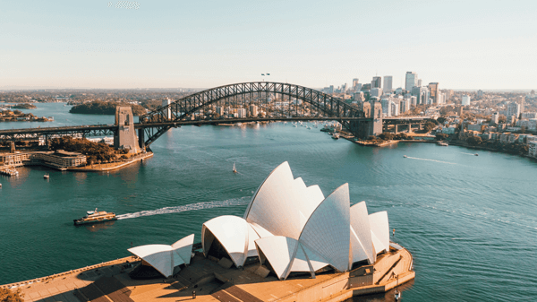

Sydney
This city has the largest ferry network in all of Australia.

Local Landmarks
Some of the most recognizable landmarks are located in Sydney.
Places to Eat
Bills
Bondi Beach, Darlinghurst, Double Bay, Surry Hills
https://www.bills.com.au/
Bennelong
Level 1
Sydney Opera House
https://www.bennelong.com.au/
Tetsuya
529 Kent Street
https://www.tetsuyas.com/
Cafe Paci
131 King Street Newtown
https://www.cafepaci.com.au/
The Boat House
Multiple venues throughout Sydney
https://www.theboathousegroup.com.au/
Places to Stay
Four Seasons Sydney
199 George Street
https://www.fourseasons.com/sydney/
Crown Towers Sydney
1 Barangaroo Avenue
https://www.crownhotels.com.au/sydney/crown-towers
Park Hyatt Sydney
7 Hickson Road
https://parkhyattsydneysuites.com/